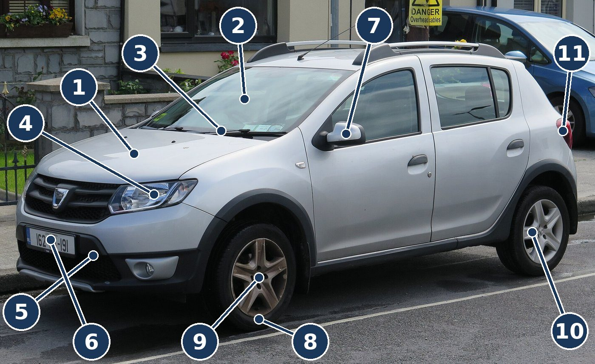
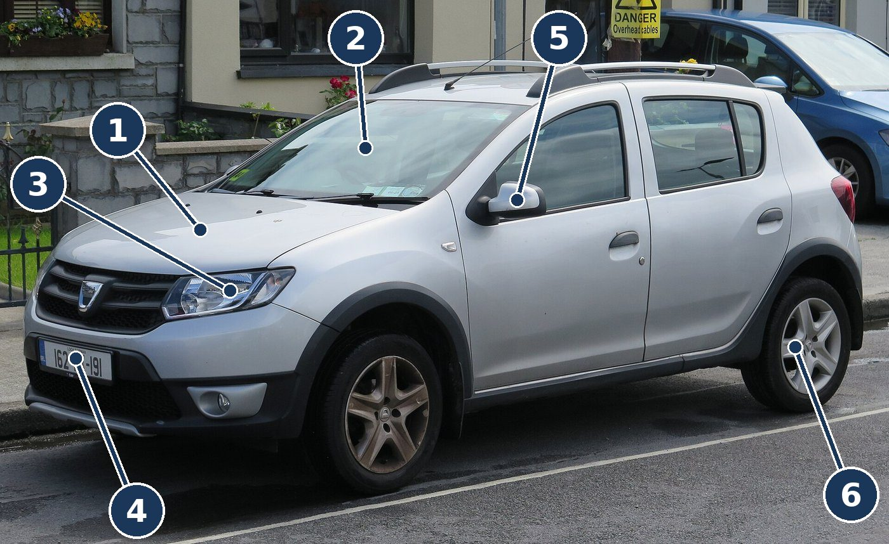

Anglais · CAP, bac pro et CFA · carrosserie · A2 to B1
The Parts of a Car
Level: CAP and baccalauréat professionnel carrosserie, CFA, English A2 to B1
Lesson: Expanding your vocabulary
Russolo was a Futurist painter. He tried to show the speed of a car, not each separate part. Your work is the opposite, and just as precise: you look at one part after another, and you name it clearly, in the workshop and to the customer.
You are a CFA apprentice in carrosserie, in CAP or in baccalauréat professionnel. In this lesson you will name the parts of a car in English, first as you hear them in a short film, then in a conversation with a customer. The film uses American English. When the British word is different, the word bank gives the British word first. You must put the words into sentences and into speech. Do not only copy them from the list.
1. Expanding your vocabulary
These are the eighteen parts named in the film. Learn both forms when two forms are given. The words in the first group are the ones you will use most often in the body-repair workshop. The words in the second group are also in the film: you need them when you talk to a customer or to a colleague.
Bodywork and the outside of the car
| Word | Français |
|---|---|
| windscreen (US: windshield) | [pare-brise] |
| bonnet (US: hood) | [capot] |
| boot (US: trunk) | [coffre] |
| headlight (also: headlamp) | [phare] |
| windscreen wiper (US: windshield wiper) | [essuie-glace] |
| front bumper | [pare-chocs avant] |
| number plate (US: license plate) | [plaque d'immatriculation] |
| petrol tank (US: gas tank) | [réservoir] |
| wing mirror (US: side mirror) | [rétroviseur extérieur] |
| tail light (also: rear light) | [feu arrière] |
| wheel | [roue] |
| tyre (US: tire) | [pneu] |
| rim | [jante] |
Inside the car, and under the car
| Word | Français |
|---|---|
| steering wheel | [volant] |
| dashboard | [tableau de bord] |
| horn | [klaxon] |
| gear stick (also: gear lever; US: gear shift) | [levier de vitesse] |
| exhaust pipe | [tuyau d'échappement] |
2. Watching and listening
Your teacher will show a short film of 1 minute 32 seconds. A young woman stands next to a car and names eighteen parts. The words appear on the screen just after she says them.
Watch the film twice. The first time, just watch and listen. If you can, cover the word bank above and try to catch the words by ear. The second time, write the American word you hear for each time below. Then add the British word when it is different.
3. Match the word to the definition
Write the letter of the definition next to each word. Use the British word from the word bank.
A. the space at the back of the car for luggage
B. the metal part of the wheel that holds the tyre
C. the lamp at the back of the car
D. the large glass at the front of the car
E. the wheel the driver turns to change direction
F. the pipe that takes waste gas out from the engine
G. the metal cover over the engine
H. the rubber part of the wheel that touches the road
I. the lamp at the front that lights the road
J. the bar that protects the front of the car if something hits it
K. the plate with the car's registration number
L. the mirror on the side of the car
4. In the workshop: complete the dialogue
A customer has brought a car in after an accident. The apprentice explains the repair. Fill each gap with one word or expression from the word bank. Use the British form. You may need a plural.
Customer: Good morning. A car hit me at the front yesterday. What needs to be repaired?
Apprentice: Good morning. The (1) is badly damaged. That is the bar at the front of the car. The left (2) is broken, so the car will not light the road well at night. There is also a dent in the (3), just above the engine.
Customer: And the glass?
Apprentice: The (4) is cracked. We must replace it, and we will fit new (5) as well.
Customer: Is the back of the car all right?
Apprentice: The (6) is only scratched, so we can repair the paint. The (7) is not broken. But your (8) is bent; we will put a new one on so that the car can go back on the road.
Customer: What about the mirrors and the wheels?
Apprentice: The left (9) is broken. We will replace it. One (10) is scratched; the (11) itself is still good, so we do not need a new tyre.
5. Now speak: explain a repair to a customer
Work in pairs. One student is the apprentice in the workshop. The other student is the customer. The car has been in a front-end accident, with some damage at the back as well.
The apprentice explains which parts are damaged, which parts can be repaired, and which parts must be replaced. The customer asks questions: time, what will change on the car, and what will stay.
You must use at least eight words from the word bank, in full sentences. Then swap roles.
Before you start, write six lines you plan to say. Do not read a list of words: put each word into a sentence the customer can understand.
You may use these short phrases:
- The front bumper is damaged.
- There is a dent in the bonnet.
- The windscreen is cracked.
- We need to replace the headlight.
- We can repair the scratch on the boot.
When you are en entreprise, speak slowly and check that the customer has understood.
Word check. Tick each word when you use it in a sentence. You need at least eight.
My six lines:
1.
2.
3.
4.
5.
6.
6. Label the car
- Look at the photo of the car.
- Find each number.
- Write the word for each number. Use the word box.
- Check the spelling in the word bank.



Open the photo in a large size
Word box: bonnet · front bumper · headlight · number plate · rim · tail light · tyre · wheel · windscreen · windscreen wiper · wing mirror
7. Fill in the accident report
- Read the story of the accident.
- Fill in the accident report for the insurance company.
- Tick the boxes.
- Draw a small sketch of the accident.
- Tick the damaged parts of car B.
- Write what happened in four sentences. Use the verbs in the box, in the past.
The story
- It is Monday 16 November 2026, at 8.30 in the morning, in Park Road, Bristol.
- Tom Baker (driver A) has a red Ford Fiesta, number plate FG19 KLM.
- He was reversing out of a parking space. He did not look behind him.
- Léa Martin (driver B) has a silver Dacia Sandero, number plate BT17 DMR.
- She was driving along Park Road. She stopped, but it was too late.
- Car A hit the front of car B.
- The front bumper of car B was dented. The left headlight broke. The number plate was bent.
- Nobody was hurt. Léa Martin brings her car to your workshop.
ACCIDENT REPORT · for the insurance company
1. When and where?
2. Was anyone hurt?
3. The drivers and the cars
Vehicle A
Vehicle B
4. What were the cars doing? Tick.
5. Sketch of the accident
Draw the road, car A and car B, with an arrow for each car.
6. Damaged parts of car B. Tick.
Look at the car in task 6.
7. What happened?
Verb box: bent · broke · dented · hit · overtook · scratched · stopped · was driving · was reversing · was turning
Write four sentences.
1.
2.
3.
4.
8. Signatures
Driver A
Driver B
8. The spirale de Gorse
Spirale de Gorse · Version courte, en quatre tours
Do a short spiral in four tours. First read the example. Then do the same with another word from the list.
Example: the front bumper
Tour 1. I notice. I see a long bar at the front of the car, just under the headlights.
Tour 2. I identify. This is the front bumper [pare-chocs avant]. It protects the front of the car if something hits it.
Tour 3. I understand. After an accident the bumper is often the first part that is damaged. The workshop may repair it or replace it.
Tour 4. I find the meaning. In body repair, the front bumper is a part the apprentice must name clearly to the customer.
Now you. Choose one other word from the list, for example windscreen, bonnet or wing mirror. Write one or two short sentences for each tour.
Tour 1. I notice.
Tour 2. I identify.
Tour 3. I understand.
Tour 4. I find the meaning.
To finish Tour 4, you can use: The point is… / I keep to the text: … / I stay focused on… / Beyond this, other questions may arise and open up further exploration.
Version dys
Short steps. One task at a time. Take your time.
1. Expanding your vocabulary
These are the eighteen parts named in the film. Learn both forms when two forms are given. The words in the first group are the ones you will use most often in the body-repair workshop. The words in the second group are also in the film: you need them when you talk to a customer or to a colleague.
Bodywork and the outside of the car
| Word | Français |
|---|---|
| windscreen (US: windshield) | [pare-brise] |
| bonnet (US: hood) | [capot] |
| boot (US: trunk) | [coffre] |
| headlight (also: headlamp) | [phare] |
| windscreen wiper (US: windshield wiper) | [essuie-glace] |
| front bumper | [pare-chocs avant] |
| number plate (US: license plate) | [plaque d'immatriculation] |
| petrol tank (US: gas tank) | [réservoir] |
| wing mirror (US: side mirror) | [rétroviseur extérieur] |
| tail light (also: rear light) | [feu arrière] |
| wheel | [roue] |
| tyre (US: tire) | [pneu] |
| rim | [jante] |
Inside the car, and under the car
| Word | Français |
|---|---|
| steering wheel | [volant] |
| dashboard | [tableau de bord] |
| horn | [klaxon] |
| gear stick (also: gear lever; US: gear shift) | [levier de vitesse] |
| exhaust pipe | [tuyau d'échappement] |
2. Watching and listening
- Watch the film once. Just listen.
- Watch again. Write the word you hear.
- Add the British word if it is different.
Words to use: windscreen · bonnet · boot · headlight · windscreen wiper · front bumper · number plate · petrol tank · wing mirror · tail light · wheel · tyre · rim · steering wheel · dashboard · horn · gear stick · exhaust pipe
Your teacher will show a short film of 1 minute 32 seconds. A young woman stands next to a car and names eighteen parts. The words appear on the screen just after she says them.
Watch the film twice. The first time, just watch and listen. If you can, cover the word bank above and try to catch the words by ear. The second time, write the American word you hear for each time below. Then add the British word when it is different.
3. Match the word to the definition
- Read one word.
- Find its definition, from A to L.
- Write the letter.
Write the letter of the definition next to each word. Use the British word from the word bank.
A. the space at the back of the car for luggage
B. the metal part of the wheel that holds the tyre
C. the lamp at the back of the car
D. the large glass at the front of the car
E. the wheel the driver turns to change direction
F. the pipe that takes waste gas out from the engine
G. the metal cover over the engine
H. the rubber part of the wheel that touches the road
I. the lamp at the front that lights the road
J. the bar that protects the front of the car if something hits it
K. the plate with the car's registration number
L. the mirror on the side of the car
4. In the workshop: complete the dialogue
- Read one line.
- Find the word in the list.
- Write it in the gap.
Words to use: windscreen · bonnet · boot · headlight · windscreen wiper · front bumper · number plate · petrol tank · wing mirror · tail light · wheel · tyre · rim · steering wheel · dashboard · horn · gear stick · exhaust pipe
A customer has brought a car in after an accident. The apprentice explains the repair. Fill each gap with one word or expression from the word bank. Use the British form. You may need a plural.
Customer: Good morning. A car hit me at the front yesterday. What needs to be repaired?
Apprentice: Good morning. The (1) is badly damaged. That is the bar at the front of the car. The left (2) is broken, so the car will not light the road well at night. There is also a dent in the (3), just above the engine.
Customer: And the glass?
Apprentice: The (4) is cracked. We must replace it, and we will fit new (5) as well.
Customer: Is the back of the car all right?
Apprentice: The (6) is only scratched, so we can repair the paint. The (7) is not broken. But your (8) is bent; we will put a new one on so that the car can go back on the road.
Customer: What about the mirrors and the wheels?
Apprentice: The left (9) is broken. We will replace it. One (10) is scratched; the (11) itself is still good, so we do not need a new tyre.
5. Now speak: explain a repair to a customer
- Choose your role: the apprentice or the customer.
- Write six lines. Put one word from the list in each line.
- Say your lines to your partner.
- Tick the words you use. You need eight.
- Swap roles.
Work in pairs. One student is the apprentice in the workshop. The other student is the customer. The car has been in a front-end accident, with some damage at the back as well.
The apprentice explains which parts are damaged, which parts can be repaired, and which parts must be replaced. The customer asks questions: time, what will change on the car, and what will stay.
You must use at least eight words from the word bank, in full sentences. Then swap roles.
Before you start, write six lines you plan to say. Do not read a list of words: put each word into a sentence the customer can understand.
You may use these short phrases:
- The front bumper is damaged.
- There is a dent in the bonnet.
- The windscreen is cracked.
- We need to replace the headlight.
- We can repair the scratch on the boot.
When you are en entreprise, speak slowly and check that the customer has understood.
Word check. Tick each word when you use it in a sentence. You need at least eight.
My six lines:
1.
2.
3.
4.
5.
6.
6. Label the car
- Look at the photo.
- Find number 1.
- Choose a word in the box.
- Write it next to the number.


Open the photo in a large size
Word box: bonnet · headlight · number plate · wheel · windscreen · wing mirror
7. Fill in the accident report
- Read the story of the accident.
- Fill in the accident report for the insurance company.
- Tick the boxes.
- Draw a small sketch of the accident.
- Tick the damaged parts of car B.
- Write what happened in four sentences. Use the verbs in the box, in the past.
The story
- It is Monday 16 November 2026, at 8.30 in the morning, in Park Road, Bristol.
- Tom Baker (driver A) has a red Ford Fiesta, number plate FG19 KLM.
- He was reversing out of a parking space. He did not look behind him.
- Léa Martin (driver B) has a silver Dacia Sandero, number plate BT17 DMR.
- She was driving along Park Road. She stopped, but it was too late.
- Car A hit the front of car B.
- The front bumper of car B was dented. The left headlight broke. The number plate was bent.
- Nobody was hurt. Léa Martin brings her car to your workshop.
ACCIDENT REPORT · for the insurance company
1. When and where?
2. Was anyone hurt?
3. The drivers and the cars
Vehicle A
Vehicle B
4. What were the cars doing? Tick.
5. Sketch of the accident
Draw the road, car A and car B, with an arrow for each car.
6. Damaged parts of car B. Tick.
Look at the car in task 6.
7. What happened?
Verb box: bent · broke · dented · hit · overtook · scratched · stopped · was driving · was reversing · was turning
1. Car A was …
2. Car B was …
3. Car A … car B.
4. The … of car B was … .
8. Signatures
Driver A
Driver B
8. The spirale de Gorse
Spirale de Gorse · Version courte, en quatre tours
- Read the example.
- Choose one other word from the list.
- Complete one sentence for each tour.
Example: the front bumper
Tour 1. I notice. I see a long bar at the front of the car, just under the headlights.
Tour 2. I identify. This is the front bumper [pare-chocs avant]. It protects the front of the car if something hits it.
Tour 3. I understand. After an accident the bumper is often the first part that is damaged. The workshop may repair it or replace it.
Tour 4. I find the meaning. In body repair, the front bumper is a part the apprentice must name clearly to the customer.
Words to use: windscreen · bonnet · boot · headlight · windscreen wiper · front bumper · number plate · petrol tank · wing mirror · tail light · wheel · tyre · rim · steering wheel · dashboard · horn · gear stick · exhaust pipe
Tour 1. I notice. I see a …
Tour 2. I identify. This is the … [ … ]. It …
Tour 3. I understand. After an accident, the …
Tour 4. I find the meaning. In body repair, the … is a part the apprentice must …
To finish Tour 4, you can use: The point is… / I keep to the text: … / I stay focused on… / Beyond this, other questions may arise and open up further exploration.
Answer key (teacher)
About the film
The film is a Facebook reel of 1 minute 32 seconds, titled Car Vocabulary… How many did you know? It was posted by the account English with Ariannita la Gringa on 15 October 2026 (01:16 Europe/Paris). A young woman stands in the street next to a silver Toyota and points to eighteen parts of the car. Each time she says "This is the…" and the American word appears on the screen. It is a vocabulary film, not a film of a body-repair workshop.
The reel is still protected by copyright. It may be shown in class from the original Facebook page, with the author's name given. It must not be copied, downloaded onto a school site, or re-posted without the author's permission.
In the film, at 0:42 to 0:48, she says "gas tank" while pointing at the open fuel filler (la trappe à carburant), not at the tank itself. At 0:48 to 0:53, "dashboard" is shown as a close-up of the instrument cluster. Accept these answers as the words she actually says.
If students write the American forms from the film in tasks 3, 4 or 5, accept them, and ask the student to give the British form as well.
Task 2. Watching and listening
- windshield; British: windscreen
- hood; British: bonnet
- trunk; British: boot
- headlight (headlamp is also accepted)
- windshield wiper; British: windscreen wiper
- steering wheel
- front bumper
- license plate; British: number plate
- gas tank; British: petrol tank
- dashboard
- side mirror; British: wing mirror
- tail light (rear light is also accepted)
- horn
- gear shift; British: gear stick (gear lever is also accepted)
- exhaust pipe
- wheel
- tire; British: tyre
- rim
Task 3. Match the word to the definition
- D
- G
- A
- J
- I
- C
- L
- K
- H
- B
- F
- E
Task 4. In the workshop
- front bumper
- headlight
- bonnet
- windscreen
- windscreen wipers
- boot
- tail light
- number plate
- wing mirror
- rim
- tyre
Task 6. Label the car
- bonnet
- windscreen
- windscreen wiper
- headlight
- front bumper
- number plate
- wing mirror
- tyre
- rim
- wheel
- tail light
For number 10, accept wheel; for number 8, accept tyre (US: tire); for number 1, accept bonnet (US: hood).
Task 7. Fill in the accident report (model answer)
- Date: 16 November 2026
- Time: 8.30 am
- Place: Park Road, Bristol
- Was anyone hurt?: No
- Driver A: Tom Baker · red Ford Fiesta · FG19 KLM
- Driver B: Léa Martin · silver Dacia Sandero · BT17 DMR
- Vehicle A: was leaving a parking space; was reversing
- Vehicle B: was driving along the road; stopped
- Damaged parts of car B: front bumper, headlight, number plate
What happened?
- Car A was reversing out of a parking space.
- Car B was driving along Park Road.
- Driver B stopped, but car A hit the front of car B.
- The front bumper of car B was dented, the left headlight broke and the number plate was bent.
Accept other correct sentences with the verbs in the past and the words from the word bank.
Task 8. The spirale de Gorse (model for windscreen)
Tour 1. I notice. I see a large sheet of glass at the front of the car, in front of the driver.
Tour 2. I identify. This is the windscreen [pare-brise]. The driver looks through it to see the road.
Tour 3. I understand. If the windscreen is cracked, it is not safe to drive. The workshop must replace it, and often the wipers as well.
Tour 4. I find the meaning. In body repair, the windscreen is a part the apprentice must check after an accident and explain clearly to the customer.
A clear spiral on bonnet, wing mirror or another word from the list is also accepted.
Downloads
Download the lesson, Version élève
Download the lesson, Version prof (answer key)
Download the lesson, Version dys